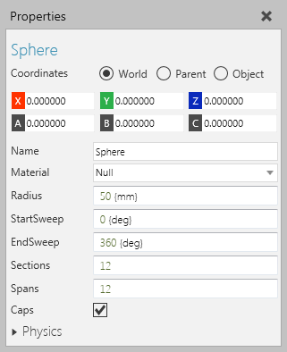
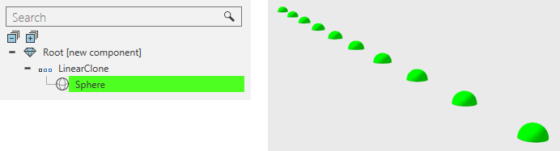

A Sphere feature is a spherical shape.

Spheres can be molded into different shapes, for example capsules and balls, and used as indicators in the 3D world.

| Name | Description |
| Name | Defines the name of the sphere. |
| Visible | Turns on/off the visibility of sphere. |
| Material | Defines the material of the sphere. |
| Radius | Defines the radius of the sphere. |
| StartSweep | Defines the start angle (in degrees) for sweeping the sphere's surface. |
| EndSweep | Defines the end angle (in degrees) for sweeping the sphere's surface. |
| Sections | Defines the amount of faces around the longitudinal circumference of the sphere. |
| Spans | Defines the amount of sections between the poles of the sphere. |
| Caps | Turns on/off the rendering of caps in the sphere. |
| Physics | Defines a set of physics properties for the feature. |